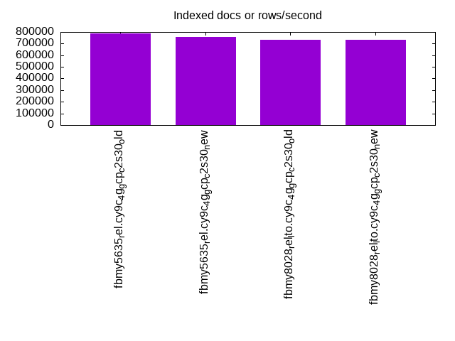
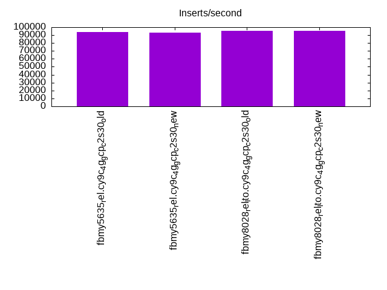
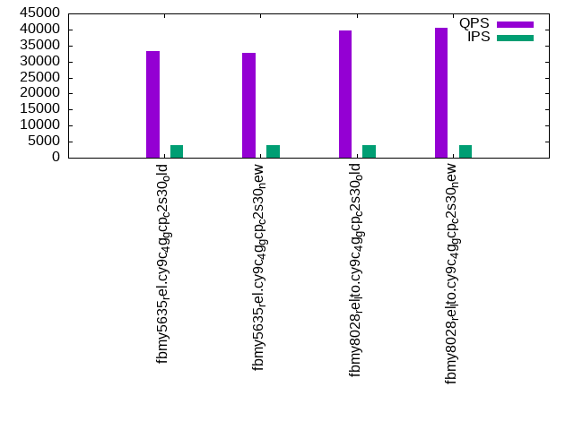

Introduction
This is a report for the insert benchmark with 160M docs and 8 client(s). It is generated by scripts (bash, awk, sed) and Tufte might not be impressed. An overview of the insert benchmark is here and a short update is here. Below, by DBMS, I mean DBMS+version.config. An example is my8020.c10b40 where my means MySQL, 8020 is version 8.0.20 and c10b40 is the name for the configuration file.
The test server is a c2-standard-30 from GCP with 15 cores, hyperthreads disabled, 120G RAM, XFS + SW RAID 0 on 4 NVMe devices (1.5TB). The benchmark was run with 8 client and there were 1 or 3 connections per client (1 for queries or inserts without rate limits, 1+1 for rate limited inserts+deletes). There are 8 tables, client per table. It loads 20M rows per table without secondary indexes, creates secondary indexes, then inserts 50M rows with a delete per insert to avoid growing the table. It then does 3 read+write tests for 3600s each that do queries as fast as possible with 100, 500 and then 1000 inserts/second/client concurrent with the queries and 1000 deletes/second to avoid growing the table. The database is cached by the OS but not by MyRocks.
The tested DBMS are:
- fbmy5635_rel.cy9c_4g_gcp_c2s30_old - MyRocks and FB MySQL 5.6.35, rel build, cy9c_4g_gcp_c2s30 config, old build from Mar 2023
- fbmy5635_rel.cy9c_4g_gcp_c2s30_new - MyRocks and FB MySQL 5.6.35, rel build, cy9c_4g_gcp_c2s30 config, new build from Jun 2023 with RocksDB 8.2.1
- fbmy8028_rel_lto.cy9c_4g_gcp_c2s30_old - MyRocks and FB MySQL 8.0.28, rel build, cy9c_4g_gcp_c2s30 config, old build from Mar 2023
- fbmy8028_rel_lto.cy9c_4g_gcp_c2s30_new - MyRocks and FB MySQL 8.0.28, rel build, cy9c_4g_gcp_c2s30 config, new build from Jun 2023 with RocksDB 8.3.1
Contents
- Summary
- l.i0: load without secondary indexes
- l.x: create secondary indexes
- l.i1: continue load after secondary indexes created
- q100.1: range queries with 100 insert/s per client
- q500.1: range queries with 500 insert/s per client
- q1000.1: range queries with 1000 insert/s per client
Summary
The numbers are inserts/s for l.i0 and l.i1, indexed docs (or rows) /s for l.x and queries/s for q*.2. The values are the average rate over the entire test for inserts (IPS) and queries (QPS). The range of values for IPS and QPS is split into 3 parts: bottom 25%, middle 50%, top 25%. Values in the bottom 25% have a red background, values in the top 25% have a green background and values in the middle have no color. A gray background is used for values that can be ignored because the DBMS did not sustain the target insert rate. Red backgrounds are not used when the minimum value is within 80% of the max value.
| dbms | l.i0 | l.x | l.i1 | q100.1 | q500.1 | q1000.1 |
|---|---|---|---|---|---|---|
| fbmy5635_rel.cy9c_4g_gcp_c2s30_old | 606061 | 784804 | 93809 | 34172 | 33190 | 32190 |
| fbmy5635_rel.cy9c_4g_gcp_c2s30_new | 606061 | 755189 | 92958 | 33371 | 32576 | 31532 |
| fbmy8028_rel_lto.cy9c_4g_gcp_c2s30_old | 529801 | 734404 | 95579 | 40462 | 39563 | 38103 |
| fbmy8028_rel_lto.cy9c_4g_gcp_c2s30_new | 536913 | 734404 | 95147 | 41559 | 40452 | 39116 |
This table has relative throughput, throughput for the DBMS relative to the DBMS in the first line, using the absolute throughput from the previous table. Values less than 0.95 have a yellow background. Values greater than 1.05 have a blue background.
| dbms | l.i0 | l.x | l.i1 | q100.1 | q500.1 | q1000.1 |
|---|---|---|---|---|---|---|
| fbmy5635_rel.cy9c_4g_gcp_c2s30_old | 1.00 | 1.00 | 1.00 | 1.00 | 1.00 | 1.00 |
| fbmy5635_rel.cy9c_4g_gcp_c2s30_new | 1.00 | 0.96 | 0.99 | 0.98 | 0.98 | 0.98 |
| fbmy8028_rel_lto.cy9c_4g_gcp_c2s30_old | 0.87 | 0.94 | 1.02 | 1.18 | 1.19 | 1.18 |
| fbmy8028_rel_lto.cy9c_4g_gcp_c2s30_new | 0.89 | 0.94 | 1.01 | 1.22 | 1.22 | 1.22 |
This lists the average rate of inserts/s for the tests that do inserts concurrent with queries. For such tests the query rate is listed in the table above. The read+write tests are setup so that the insert rate should match the target rate every second. Cells that are not at least 95% of the target have a red background to indicate a failure to satisfy the target.
| dbms | q100.1 | q500.1 | q1000.1 |
|---|---|---|---|
| fbmy5635_rel.cy9c_4g_gcp_c2s30_old | 797 | 3987 | 7976 |
| fbmy5635_rel.cy9c_4g_gcp_c2s30_new | 798 | 3988 | 7978 |
| fbmy8028_rel_lto.cy9c_4g_gcp_c2s30_old | 797 | 3987 | 7971 |
| fbmy8028_rel_lto.cy9c_4g_gcp_c2s30_new | 798 | 3988 | 7976 |
| target | 800 | 4000 | 8000 |
l.i0
l.i0: load without secondary indexes. Graphs for performance per 1-second interval are here.
Average throughput:
Insert response time histogram: each cell has the percentage of responses that take <= the time in the header and max is the max response time in seconds. For the max column values in the top 25% of the range have a red background and in the bottom 25% of the range have a green background. The red background is not used when the min value is within 80% of the max value.
| dbms | 256us | 1ms | 4ms | 16ms | 64ms | 256ms | 1s | 4s | 16s | gt | max |
|---|---|---|---|---|---|---|---|---|---|---|---|
| fbmy5635_rel.cy9c_4g_gcp_c2s30_old | 23.026 | 76.949 | 0.011 | 0.001 | 0.013 | 0.001 | 0.267 | ||||
| fbmy5635_rel.cy9c_4g_gcp_c2s30_new | 23.299 | 76.678 | 0.006 | 0.002 | 0.013 | 0.001 | 0.277 | ||||
| fbmy8028_rel_lto.cy9c_4g_gcp_c2s30_old | 12.820 | 87.026 | 0.133 | 0.007 | 0.013 | 0.001 | 0.333 | ||||
| fbmy8028_rel_lto.cy9c_4g_gcp_c2s30_new | 12.950 | 86.865 | 0.161 | 0.010 | 0.014 | 0.250 |
Performance metrics for the DBMS listed above. Some are normalized by throughput, others are not. Legend for results is here.
ips qps rps rmbps wps wmbps rpq rkbpq wpi wkbpi csps cpups cspq cpupq dbgb1 dbgb2 rss maxop p50 p99 tag 606061 0 0 0.0 509.9 143.2 0.000 0.000 0.001 0.242 82174 70.4 0.136 17 5.4 6.9 1.4 0.267 80912 56738 160m.fbmy5635_rel.cy9c_4g_gcp_c2s30_old 606061 0 0 0.0 506.5 157.9 0.000 0.000 0.001 0.267 82877 70.6 0.137 17 5.4 6.9 1.4 0.277 80114 56857 160m.fbmy5635_rel.cy9c_4g_gcp_c2s30_new 529801 0 0 0.0 459.7 126.2 0.000 0.000 0.001 0.244 67486 69.6 0.127 20 5.1 6.8 1.8 0.333 69724 52360 160m.fbmy8028_rel_lto.cy9c_4g_gcp_c2s30_old 536913 0 0 0.0 450.5 138.0 0.000 0.000 0.001 0.263 68877 69.7 0.128 19 5.1 6.8 1.8 0.250 70522 53060 160m.fbmy8028_rel_lto.cy9c_4g_gcp_c2s30_new
l.x
l.x: create secondary indexes.
Average throughput:
Performance metrics for the DBMS listed above. Some are normalized by throughput, others are not. Legend for results is here.
ips qps rps rmbps wps wmbps rpq rkbpq wpi wkbpi csps cpups cspq cpupq dbgb1 dbgb2 rss maxop p50 p99 tag 784804 0 1 0.1 292.2 104.0 0.000 0.000 0.000 0.136 1136 50.4 0.001 10 10.8 12.3 4.8 0.002 NA NA 160m.fbmy5635_rel.cy9c_4g_gcp_c2s30_old 755189 0 1 0.1 278.6 97.9 0.000 0.000 0.000 0.133 1060 48.7 0.001 10 10.9 12.4 4.8 0.001 NA NA 160m.fbmy5635_rel.cy9c_4g_gcp_c2s30_new 734404 0 1 0.1 269.4 99.8 0.000 0.000 0.000 0.139 1388 49.4 0.002 10 10.9 12.5 6.1 0.002 NA NA 160m.fbmy8028_rel_lto.cy9c_4g_gcp_c2s30_old 734404 0 1 0.1 274.7 97.2 0.000 0.000 0.000 0.135 1395 48.7 0.002 10 10.8 12.5 6.1 0.002 NA NA 160m.fbmy8028_rel_lto.cy9c_4g_gcp_c2s30_new
l.i1
l.i1: continue load after secondary indexes created. Graphs for performance per 1-second interval are here.
Average throughput:
Insert response time histogram: each cell has the percentage of responses that take <= the time in the header and max is the max response time in seconds. For the max column values in the top 25% of the range have a red background and in the bottom 25% of the range have a green background. The red background is not used when the min value is within 80% of the max value.
| dbms | 256us | 1ms | 4ms | 16ms | 64ms | 256ms | 1s | 4s | 16s | gt | max |
|---|---|---|---|---|---|---|---|---|---|---|---|
| fbmy5635_rel.cy9c_4g_gcp_c2s30_old | 0.024 | 47.316 | 52.571 | 0.072 | 0.012 | 0.002 | 0.002 | nonzero | 5.311 | ||
| fbmy5635_rel.cy9c_4g_gcp_c2s30_new | 0.021 | 46.224 | 53.670 | 0.070 | 0.012 | 0.001 | 0.001 | 0.001 | 5.881 | ||
| fbmy8028_rel_lto.cy9c_4g_gcp_c2s30_old | 0.011 | 51.726 | 48.173 | 0.070 | 0.016 | 0.002 | 0.002 | nonzero | 5.539 | ||
| fbmy8028_rel_lto.cy9c_4g_gcp_c2s30_new | 0.026 | 59.094 | 40.677 | 0.174 | 0.023 | 0.002 | 0.003 | 0.001 | 5.654 |
Delete response time histogram: each cell has the percentage of responses that take <= the time in the header and max is the max response time in seconds. For the max column values in the top 25% of the range have a red background and in the bottom 25% of the range have a green background. The red background is not used when the min value is within 80% of the max value.
| dbms | 256us | 1ms | 4ms | 16ms | 64ms | 256ms | 1s | 4s | 16s | gt | max |
|---|---|---|---|---|---|---|---|---|---|---|---|
| fbmy5635_rel.cy9c_4g_gcp_c2s30_old | 0.024 | 42.107 | 57.775 | 0.076 | 0.014 | 0.002 | 0.002 | 0.001 | 5.475 | ||
| fbmy5635_rel.cy9c_4g_gcp_c2s30_new | 0.021 | 40.991 | 58.898 | 0.073 | 0.014 | 0.002 | 0.001 | 0.001 | 6.134 | ||
| fbmy8028_rel_lto.cy9c_4g_gcp_c2s30_old | 0.012 | 48.595 | 51.299 | 0.073 | 0.017 | 0.002 | 0.002 | nonzero | 4.988 | ||
| fbmy8028_rel_lto.cy9c_4g_gcp_c2s30_new | 0.028 | 56.304 | 43.460 | 0.178 | 0.024 | 0.002 | 0.004 | nonzero | 5.608 |
Performance metrics for the DBMS listed above. Some are normalized by throughput, others are not. Legend for results is here.
ips qps rps rmbps wps wmbps rpq rkbpq wpi wkbpi csps cpups cspq cpupq dbgb1 dbgb2 rss maxop p50 p99 tag 93809 0 3 1.3 468.7 121.9 0.000 0.014 0.005 1.330 84429 60.4 0.900 97 14.0 15.3 4.7 5.311 12087 0 160m.fbmy5635_rel.cy9c_4g_gcp_c2s30_old 92958 0 3 1.3 461.0 120.9 0.000 0.014 0.005 1.332 83696 60.5 0.900 98 13.9 15.2 4.7 5.881 11937 0 160m.fbmy5635_rel.cy9c_4g_gcp_c2s30_new 95579 0 3 1.3 502.2 117.7 0.000 0.014 0.005 1.261 71979 64.5 0.753 101 17.4 19.0 5.1 5.539 12437 0 160m.fbmy8028_rel_lto.cy9c_4g_gcp_c2s30_old 95147 0 3 1.3 499.1 118.0 0.000 0.014 0.005 1.270 73350 65.5 0.771 103 20.7 22.2 5.3 5.654 12740 0 160m.fbmy8028_rel_lto.cy9c_4g_gcp_c2s30_new
q100.1
q100.1: range queries with 100 insert/s per client. Graphs for performance per 1-second interval are here.
Average throughput:
Query response time histogram: each cell has the percentage of responses that take <= the time in the header and max is the max response time in seconds. For max values in the top 25% of the range have a red background and in the bottom 25% of the range have a green background. The red background is not used when the min value is within 80% of the max value.
| dbms | 256us | 1ms | 4ms | 16ms | 64ms | 256ms | 1s | 4s | 16s | gt | max |
|---|---|---|---|---|---|---|---|---|---|---|---|
| fbmy5635_rel.cy9c_4g_gcp_c2s30_old | 85.228 | 14.771 | 0.001 | nonzero | nonzero | 0.020 | |||||
| fbmy5635_rel.cy9c_4g_gcp_c2s30_new | 79.963 | 20.035 | 0.002 | nonzero | nonzero | 0.021 | |||||
| fbmy8028_rel_lto.cy9c_4g_gcp_c2s30_old | 98.621 | 1.377 | 0.002 | nonzero | 0.006 | ||||||
| fbmy8028_rel_lto.cy9c_4g_gcp_c2s30_new | 98.999 | 0.999 | 0.002 | nonzero | 0.016 |
Insert response time histogram: each cell has the percentage of responses that take <= the time in the header and max is the max response time in seconds. For max values in the top 25% of the range have a red background and in the bottom 25% of the range have a green background. The red background is not used when the min value is within 80% of the max value.
| dbms | 256us | 1ms | 4ms | 16ms | 64ms | 256ms | 1s | 4s | 16s | gt | max |
|---|---|---|---|---|---|---|---|---|---|---|---|
| fbmy5635_rel.cy9c_4g_gcp_c2s30_old | 27.092 | 72.891 | 0.017 | 0.011 | |||||||
| fbmy5635_rel.cy9c_4g_gcp_c2s30_new | 17.804 | 82.174 | 0.023 | 0.013 | |||||||
| fbmy8028_rel_lto.cy9c_4g_gcp_c2s30_old | 19.155 | 80.839 | 0.007 | 0.008 | |||||||
| fbmy8028_rel_lto.cy9c_4g_gcp_c2s30_new | 16.705 | 83.280 | 0.016 | 0.012 |
Delete response time histogram: each cell has the percentage of responses that take <= the time in the header and max is the max response time in seconds. For max values in the top 25% of the range have a red background and in the bottom 25% of the range have a green background. The red background is not used when the min value is within 80% of the max value.
| dbms | 256us | 1ms | 4ms | 16ms | 64ms | 256ms | 1s | 4s | 16s | gt | max |
|---|---|---|---|---|---|---|---|---|---|---|---|
| fbmy5635_rel.cy9c_4g_gcp_c2s30_old | 12.181 | 87.785 | 0.035 | 0.011 | |||||||
| fbmy5635_rel.cy9c_4g_gcp_c2s30_new | 8.168 | 91.757 | 0.073 | 0.002 | 0.018 | ||||||
| fbmy8028_rel_lto.cy9c_4g_gcp_c2s30_old | 17.849 | 82.144 | 0.007 | 0.008 | |||||||
| fbmy8028_rel_lto.cy9c_4g_gcp_c2s30_new | 27.502 | 72.481 | 0.017 | 0.014 |
Performance metrics for the DBMS listed above. Some are normalized by throughput, others are not. Legend for results is here.
ips qps rps rmbps wps wmbps rpq rkbpq wpi wkbpi csps cpups cspq cpupq dbgb1 dbgb2 rss maxop p50 p99 tag 797 34172 0 0.0 14.1 2.0 0.000 0.000 0.018 2.591 132412 53.3 3.875 234 12.0 14.0 4.8 0.020 4203 3740 160m.fbmy5635_rel.cy9c_4g_gcp_c2s30_old 798 33371 0 0.0 15.0 2.3 0.000 0.000 0.019 2.977 129145 53.3 3.870 240 12.0 13.9 4.7 0.021 4203 3500 160m.fbmy5635_rel.cy9c_4g_gcp_c2s30_new 797 40462 0 0.0 14.4 1.9 0.000 0.000 0.018 2.476 155665 54.6 3.847 202 12.0 14.2 5.1 0.006 5052 4541 160m.fbmy8028_rel_lto.cy9c_4g_gcp_c2s30_old 798 41559 0 0.0 17.6 2.6 0.000 0.000 0.022 3.396 159825 54.8 3.846 198 12.0 14.2 5.2 0.016 5210 4619 160m.fbmy8028_rel_lto.cy9c_4g_gcp_c2s30_new
q500.1
q500.1: range queries with 500 insert/s per client. Graphs for performance per 1-second interval are here.
Average throughput:
Query response time histogram: each cell has the percentage of responses that take <= the time in the header and max is the max response time in seconds. For max values in the top 25% of the range have a red background and in the bottom 25% of the range have a green background. The red background is not used when the min value is within 80% of the max value.
| dbms | 256us | 1ms | 4ms | 16ms | 64ms | 256ms | 1s | 4s | 16s | gt | max |
|---|---|---|---|---|---|---|---|---|---|---|---|
| fbmy5635_rel.cy9c_4g_gcp_c2s30_old | 78.918 | 21.078 | 0.004 | nonzero | nonzero | 0.035 | |||||
| fbmy5635_rel.cy9c_4g_gcp_c2s30_new | 74.397 | 25.597 | 0.005 | nonzero | nonzero | 0.032 | |||||
| fbmy8028_rel_lto.cy9c_4g_gcp_c2s30_old | 97.325 | 2.670 | 0.005 | nonzero | nonzero | 0.027 | |||||
| fbmy8028_rel_lto.cy9c_4g_gcp_c2s30_new | 97.945 | 2.050 | 0.005 | nonzero | 0.015 |
Insert response time histogram: each cell has the percentage of responses that take <= the time in the header and max is the max response time in seconds. For max values in the top 25% of the range have a red background and in the bottom 25% of the range have a green background. The red background is not used when the min value is within 80% of the max value.
| dbms | 256us | 1ms | 4ms | 16ms | 64ms | 256ms | 1s | 4s | 16s | gt | max |
|---|---|---|---|---|---|---|---|---|---|---|---|
| fbmy5635_rel.cy9c_4g_gcp_c2s30_old | 29.008 | 70.966 | 0.025 | nonzero | nonzero | 0.094 | |||||
| fbmy5635_rel.cy9c_4g_gcp_c2s30_new | 27.804 | 72.165 | 0.031 | 0.013 | |||||||
| fbmy8028_rel_lto.cy9c_4g_gcp_c2s30_old | 23.189 | 76.745 | 0.065 | 0.014 | |||||||
| fbmy8028_rel_lto.cy9c_4g_gcp_c2s30_new | 35.588 | 64.363 | 0.049 | nonzero | 0.028 |
Delete response time histogram: each cell has the percentage of responses that take <= the time in the header and max is the max response time in seconds. For max values in the top 25% of the range have a red background and in the bottom 25% of the range have a green background. The red background is not used when the min value is within 80% of the max value.
| dbms | 256us | 1ms | 4ms | 16ms | 64ms | 256ms | 1s | 4s | 16s | gt | max |
|---|---|---|---|---|---|---|---|---|---|---|---|
| fbmy5635_rel.cy9c_4g_gcp_c2s30_old | 31.540 | 68.432 | 0.027 | 0.001 | nonzero | 0.094 | |||||
| fbmy5635_rel.cy9c_4g_gcp_c2s30_new | 23.930 | 76.006 | 0.062 | 0.002 | 0.027 | ||||||
| fbmy8028_rel_lto.cy9c_4g_gcp_c2s30_old | 32.561 | 67.365 | 0.073 | 0.001 | 0.027 | ||||||
| fbmy8028_rel_lto.cy9c_4g_gcp_c2s30_new | 45.258 | 54.690 | 0.048 | 0.004 | 0.029 |
Performance metrics for the DBMS listed above. Some are normalized by throughput, others are not. Legend for results is here.
ips qps rps rmbps wps wmbps rpq rkbpq wpi wkbpi csps cpups cspq cpupq dbgb1 dbgb2 rss maxop p50 p99 tag 3987 33190 0 0.0 32.3 6.6 0.000 0.000 0.008 1.697 129666 55.0 3.907 249 12.2 13.3 4.7 0.035 4156 3900 160m.fbmy5635_rel.cy9c_4g_gcp_c2s30_old 3988 32576 0 0.0 32.0 6.3 0.000 0.000 0.008 1.629 127173 55.0 3.904 253 12.4 13.4 4.8 0.032 4079 3820 160m.fbmy5635_rel.cy9c_4g_gcp_c2s30_new 3987 39563 0 0.0 34.8 6.5 0.000 0.000 0.009 1.661 153244 56.2 3.873 213 12.4 13.7 5.2 0.027 4957 4587 160m.fbmy8028_rel_lto.cy9c_4g_gcp_c2s30_old 3988 40452 0 0.0 33.6 6.1 0.000 0.000 0.008 1.576 156605 56.3 3.871 209 12.3 13.5 5.2 0.015 5082 4699 160m.fbmy8028_rel_lto.cy9c_4g_gcp_c2s30_new
q1000.1
q1000.1: range queries with 1000 insert/s per client. Graphs for performance per 1-second interval are here.
Average throughput:

Query response time histogram: each cell has the percentage of responses that take <= the time in the header and max is the max response time in seconds. For max values in the top 25% of the range have a red background and in the bottom 25% of the range have a green background. The red background is not used when the min value is within 80% of the max value.
| dbms | 256us | 1ms | 4ms | 16ms | 64ms | 256ms | 1s | 4s | 16s | gt | max |
|---|---|---|---|---|---|---|---|---|---|---|---|
| fbmy5635_rel.cy9c_4g_gcp_c2s30_old | 72.049 | 27.935 | 0.016 | nonzero | nonzero | 0.031 | |||||
| fbmy5635_rel.cy9c_4g_gcp_c2s30_new | 66.282 | 33.708 | 0.010 | nonzero | nonzero | 0.029 | |||||
| fbmy8028_rel_lto.cy9c_4g_gcp_c2s30_old | 94.229 | 5.763 | 0.008 | nonzero | nonzero | 0.026 | |||||
| fbmy8028_rel_lto.cy9c_4g_gcp_c2s30_new | 95.686 | 4.307 | 0.007 | nonzero | nonzero | 0.024 |
Insert response time histogram: each cell has the percentage of responses that take <= the time in the header and max is the max response time in seconds. For max values in the top 25% of the range have a red background and in the bottom 25% of the range have a green background. The red background is not used when the min value is within 80% of the max value.
| dbms | 256us | 1ms | 4ms | 16ms | 64ms | 256ms | 1s | 4s | 16s | gt | max |
|---|---|---|---|---|---|---|---|---|---|---|---|
| fbmy5635_rel.cy9c_4g_gcp_c2s30_old | 8.696 | 73.319 | 17.971 | 0.014 | 0.023 | ||||||
| fbmy5635_rel.cy9c_4g_gcp_c2s30_new | 19.747 | 80.219 | 0.034 | nonzero | 0.020 | ||||||
| fbmy8028_rel_lto.cy9c_4g_gcp_c2s30_old | 23.716 | 76.272 | 0.011 | nonzero | 0.023 | ||||||
| fbmy8028_rel_lto.cy9c_4g_gcp_c2s30_new | 33.587 | 66.405 | 0.008 | 0.014 |
Delete response time histogram: each cell has the percentage of responses that take <= the time in the header and max is the max response time in seconds. For max values in the top 25% of the range have a red background and in the bottom 25% of the range have a green background. The red background is not used when the min value is within 80% of the max value.
| dbms | 256us | 1ms | 4ms | 16ms | 64ms | 256ms | 1s | 4s | 16s | gt | max |
|---|---|---|---|---|---|---|---|---|---|---|---|
| fbmy5635_rel.cy9c_4g_gcp_c2s30_old | 9.987 | 73.013 | 16.982 | 0.017 | 0.033 | ||||||
| fbmy5635_rel.cy9c_4g_gcp_c2s30_new | 16.643 | 83.290 | 0.064 | 0.004 | 0.033 | ||||||
| fbmy8028_rel_lto.cy9c_4g_gcp_c2s30_old | 29.324 | 70.660 | 0.013 | 0.003 | 0.037 | ||||||
| fbmy8028_rel_lto.cy9c_4g_gcp_c2s30_new | 42.637 | 57.352 | 0.009 | 0.002 | 0.033 |
Performance metrics for the DBMS listed above. Some are normalized by throughput, others are not. Legend for results is here.
ips qps rps rmbps wps wmbps rpq rkbpq wpi wkbpi csps cpups cspq cpupq dbgb1 dbgb2 rss maxop p50 p99 tag 7976 32190 0 0.0 62.5 12.9 0.000 0.000 0.008 1.658 126583 57.7 3.932 269 12.2 13.4 4.7 0.031 4044 3806 160m.fbmy5635_rel.cy9c_4g_gcp_c2s30_old 7978 31532 0 0.0 63.0 12.9 0.000 0.000 0.008 1.662 124300 57.7 3.942 274 12.6 13.8 4.7 0.029 3933 3724 160m.fbmy5635_rel.cy9c_4g_gcp_c2s30_new 7971 38103 0 0.0 64.8 12.7 0.000 0.000 0.008 1.628 149012 58.8 3.911 231 12.5 13.9 5.2 0.026 4795 4475 160m.fbmy8028_rel_lto.cy9c_4g_gcp_c2s30_old 7976 39116 0 0.0 65.1 12.8 0.000 0.000 0.008 1.648 152979 58.8 3.911 225 12.4 13.8 5.1 0.024 4906 4571 160m.fbmy8028_rel_lto.cy9c_4g_gcp_c2s30_new
l.i0
l.i0: load without secondary indexes
Performance metrics for all DBMS, not just the ones listed above. Some are normalized by throughput, others are not. Legend for results is here.
ips qps rps rmbps wps wmbps rpq rkbpq wpi wkbpi csps cpups cspq cpupq dbgb1 dbgb2 rss maxop p50 p99 tag 606061 0 0 0.0 509.9 143.2 0.000 0.000 0.001 0.242 82174 70.4 0.136 17 5.4 6.9 1.4 0.267 80912 56738 160m.fbmy5635_rel.cy9c_4g_gcp_c2s30_old 606061 0 0 0.0 506.5 157.9 0.000 0.000 0.001 0.267 82877 70.6 0.137 17 5.4 6.9 1.4 0.277 80114 56857 160m.fbmy5635_rel.cy9c_4g_gcp_c2s30_new 529801 0 0 0.0 459.7 126.2 0.000 0.000 0.001 0.244 67486 69.6 0.127 20 5.1 6.8 1.8 0.333 69724 52360 160m.fbmy8028_rel_lto.cy9c_4g_gcp_c2s30_old 536913 0 0 0.0 450.5 138.0 0.000 0.000 0.001 0.263 68877 69.7 0.128 19 5.1 6.8 1.8 0.250 70522 53060 160m.fbmy8028_rel_lto.cy9c_4g_gcp_c2s30_new
l.x
l.x: create secondary indexes
Performance metrics for all DBMS, not just the ones listed above. Some are normalized by throughput, others are not. Legend for results is here.
ips qps rps rmbps wps wmbps rpq rkbpq wpi wkbpi csps cpups cspq cpupq dbgb1 dbgb2 rss maxop p50 p99 tag 784804 0 1 0.1 292.2 104.0 0.000 0.000 0.000 0.136 1136 50.4 0.001 10 10.8 12.3 4.8 0.002 NA NA 160m.fbmy5635_rel.cy9c_4g_gcp_c2s30_old 755189 0 1 0.1 278.6 97.9 0.000 0.000 0.000 0.133 1060 48.7 0.001 10 10.9 12.4 4.8 0.001 NA NA 160m.fbmy5635_rel.cy9c_4g_gcp_c2s30_new 734404 0 1 0.1 269.4 99.8 0.000 0.000 0.000 0.139 1388 49.4 0.002 10 10.9 12.5 6.1 0.002 NA NA 160m.fbmy8028_rel_lto.cy9c_4g_gcp_c2s30_old 734404 0 1 0.1 274.7 97.2 0.000 0.000 0.000 0.135 1395 48.7 0.002 10 10.8 12.5 6.1 0.002 NA NA 160m.fbmy8028_rel_lto.cy9c_4g_gcp_c2s30_new
l.i1
l.i1: continue load after secondary indexes created
Performance metrics for all DBMS, not just the ones listed above. Some are normalized by throughput, others are not. Legend for results is here.
ips qps rps rmbps wps wmbps rpq rkbpq wpi wkbpi csps cpups cspq cpupq dbgb1 dbgb2 rss maxop p50 p99 tag 93809 0 3 1.3 468.7 121.9 0.000 0.014 0.005 1.330 84429 60.4 0.900 97 14.0 15.3 4.7 5.311 12087 0 160m.fbmy5635_rel.cy9c_4g_gcp_c2s30_old 92958 0 3 1.3 461.0 120.9 0.000 0.014 0.005 1.332 83696 60.5 0.900 98 13.9 15.2 4.7 5.881 11937 0 160m.fbmy5635_rel.cy9c_4g_gcp_c2s30_new 95579 0 3 1.3 502.2 117.7 0.000 0.014 0.005 1.261 71979 64.5 0.753 101 17.4 19.0 5.1 5.539 12437 0 160m.fbmy8028_rel_lto.cy9c_4g_gcp_c2s30_old 95147 0 3 1.3 499.1 118.0 0.000 0.014 0.005 1.270 73350 65.5 0.771 103 20.7 22.2 5.3 5.654 12740 0 160m.fbmy8028_rel_lto.cy9c_4g_gcp_c2s30_new
q100.1
q100.1: range queries with 100 insert/s per client
Performance metrics for all DBMS, not just the ones listed above. Some are normalized by throughput, others are not. Legend for results is here.
ips qps rps rmbps wps wmbps rpq rkbpq wpi wkbpi csps cpups cspq cpupq dbgb1 dbgb2 rss maxop p50 p99 tag 797 34172 0 0.0 14.1 2.0 0.000 0.000 0.018 2.591 132412 53.3 3.875 234 12.0 14.0 4.8 0.020 4203 3740 160m.fbmy5635_rel.cy9c_4g_gcp_c2s30_old 798 33371 0 0.0 15.0 2.3 0.000 0.000 0.019 2.977 129145 53.3 3.870 240 12.0 13.9 4.7 0.021 4203 3500 160m.fbmy5635_rel.cy9c_4g_gcp_c2s30_new 797 40462 0 0.0 14.4 1.9 0.000 0.000 0.018 2.476 155665 54.6 3.847 202 12.0 14.2 5.1 0.006 5052 4541 160m.fbmy8028_rel_lto.cy9c_4g_gcp_c2s30_old 798 41559 0 0.0 17.6 2.6 0.000 0.000 0.022 3.396 159825 54.8 3.846 198 12.0 14.2 5.2 0.016 5210 4619 160m.fbmy8028_rel_lto.cy9c_4g_gcp_c2s30_new
q500.1
q500.1: range queries with 500 insert/s per client
Performance metrics for all DBMS, not just the ones listed above. Some are normalized by throughput, others are not. Legend for results is here.
ips qps rps rmbps wps wmbps rpq rkbpq wpi wkbpi csps cpups cspq cpupq dbgb1 dbgb2 rss maxop p50 p99 tag 3987 33190 0 0.0 32.3 6.6 0.000 0.000 0.008 1.697 129666 55.0 3.907 249 12.2 13.3 4.7 0.035 4156 3900 160m.fbmy5635_rel.cy9c_4g_gcp_c2s30_old 3988 32576 0 0.0 32.0 6.3 0.000 0.000 0.008 1.629 127173 55.0 3.904 253 12.4 13.4 4.8 0.032 4079 3820 160m.fbmy5635_rel.cy9c_4g_gcp_c2s30_new 3987 39563 0 0.0 34.8 6.5 0.000 0.000 0.009 1.661 153244 56.2 3.873 213 12.4 13.7 5.2 0.027 4957 4587 160m.fbmy8028_rel_lto.cy9c_4g_gcp_c2s30_old 3988 40452 0 0.0 33.6 6.1 0.000 0.000 0.008 1.576 156605 56.3 3.871 209 12.3 13.5 5.2 0.015 5082 4699 160m.fbmy8028_rel_lto.cy9c_4g_gcp_c2s30_new
q1000.1
q1000.1: range queries with 1000 insert/s per client
Performance metrics for all DBMS, not just the ones listed above. Some are normalized by throughput, others are not. Legend for results is here.
ips qps rps rmbps wps wmbps rpq rkbpq wpi wkbpi csps cpups cspq cpupq dbgb1 dbgb2 rss maxop p50 p99 tag 7976 32190 0 0.0 62.5 12.9 0.000 0.000 0.008 1.658 126583 57.7 3.932 269 12.2 13.4 4.7 0.031 4044 3806 160m.fbmy5635_rel.cy9c_4g_gcp_c2s30_old 7978 31532 0 0.0 63.0 12.9 0.000 0.000 0.008 1.662 124300 57.7 3.942 274 12.6 13.8 4.7 0.029 3933 3724 160m.fbmy5635_rel.cy9c_4g_gcp_c2s30_new 7971 38103 0 0.0 64.8 12.7 0.000 0.000 0.008 1.628 149012 58.8 3.911 231 12.5 13.9 5.2 0.026 4795 4475 160m.fbmy8028_rel_lto.cy9c_4g_gcp_c2s30_old 7976 39116 0 0.0 65.1 12.8 0.000 0.000 0.008 1.648 152979 58.8 3.911 225 12.4 13.8 5.1 0.024 4906 4571 160m.fbmy8028_rel_lto.cy9c_4g_gcp_c2s30_new
l.i0
- l.i0: load without secondary indexes
- Legend for results is here.
- Each entry lists the percentage of responses that fit in that bucket (slower than max time for previous bucket, faster than min time for next bucket).
Insert response time histogram
256us 1ms 4ms 16ms 64ms 256ms 1s 4s 16s gt max tag 0.000 23.026 76.949 0.011 0.001 0.013 0.001 0.000 0.000 0.000 0.267 fbmy5635_rel.cy9c_4g_gcp_c2s30_old 0.000 23.299 76.678 0.006 0.002 0.013 0.001 0.000 0.000 0.000 0.277 fbmy5635_rel.cy9c_4g_gcp_c2s30_new 0.000 12.820 87.026 0.133 0.007 0.013 0.001 0.000 0.000 0.000 0.333 fbmy8028_rel_lto.cy9c_4g_gcp_c2s30_old 0.000 12.950 86.865 0.161 0.010 0.014 0.000 0.000 0.000 0.000 0.250 fbmy8028_rel_lto.cy9c_4g_gcp_c2s30_new
l.x
- l.x: create secondary indexes
- Legend for results is here.
- Each entry lists the percentage of responses that fit in that bucket (slower than max time for previous bucket, faster than min time for next bucket).
TODO - determine whether there is data for create index response time
l.i1
- l.i1: continue load after secondary indexes created
- Legend for results is here.
- Each entry lists the percentage of responses that fit in that bucket (slower than max time for previous bucket, faster than min time for next bucket).
Insert response time histogram
256us 1ms 4ms 16ms 64ms 256ms 1s 4s 16s gt max tag 0.000 0.024 47.316 52.571 0.072 0.012 0.002 0.002 nonzero 0.000 5.311 fbmy5635_rel.cy9c_4g_gcp_c2s30_old 0.000 0.021 46.224 53.670 0.070 0.012 0.001 0.001 0.001 0.000 5.881 fbmy5635_rel.cy9c_4g_gcp_c2s30_new 0.000 0.011 51.726 48.173 0.070 0.016 0.002 0.002 nonzero 0.000 5.539 fbmy8028_rel_lto.cy9c_4g_gcp_c2s30_old 0.000 0.026 59.094 40.677 0.174 0.023 0.002 0.003 0.001 0.000 5.654 fbmy8028_rel_lto.cy9c_4g_gcp_c2s30_new
Delete response time histogram
256us 1ms 4ms 16ms 64ms 256ms 1s 4s 16s gt max tag 0.000 0.024 42.107 57.775 0.076 0.014 0.002 0.002 0.001 0.000 5.475 fbmy5635_rel.cy9c_4g_gcp_c2s30_old 0.000 0.021 40.991 58.898 0.073 0.014 0.002 0.001 0.001 0.000 6.134 fbmy5635_rel.cy9c_4g_gcp_c2s30_new 0.000 0.012 48.595 51.299 0.073 0.017 0.002 0.002 nonzero 0.000 4.988 fbmy8028_rel_lto.cy9c_4g_gcp_c2s30_old 0.000 0.028 56.304 43.460 0.178 0.024 0.002 0.004 nonzero 0.000 5.608 fbmy8028_rel_lto.cy9c_4g_gcp_c2s30_new
q100.1
- q100.1: range queries with 100 insert/s per client
- Legend for results is here.
- Each entry lists the percentage of responses that fit in that bucket (slower than max time for previous bucket, faster than min time for next bucket).
Query response time histogram
256us 1ms 4ms 16ms 64ms 256ms 1s 4s 16s gt max tag 85.228 14.771 0.001 nonzero nonzero 0.000 0.000 0.000 0.000 0.000 0.020 fbmy5635_rel.cy9c_4g_gcp_c2s30_old 79.963 20.035 0.002 nonzero nonzero 0.000 0.000 0.000 0.000 0.000 0.021 fbmy5635_rel.cy9c_4g_gcp_c2s30_new 98.621 1.377 0.002 nonzero 0.000 0.000 0.000 0.000 0.000 0.000 0.006 fbmy8028_rel_lto.cy9c_4g_gcp_c2s30_old 98.999 0.999 0.002 nonzero 0.000 0.000 0.000 0.000 0.000 0.000 0.016 fbmy8028_rel_lto.cy9c_4g_gcp_c2s30_new
Insert response time histogram
256us 1ms 4ms 16ms 64ms 256ms 1s 4s 16s gt max tag 0.000 27.092 72.891 0.017 0.000 0.000 0.000 0.000 0.000 0.000 0.011 fbmy5635_rel.cy9c_4g_gcp_c2s30_old 0.000 17.804 82.174 0.023 0.000 0.000 0.000 0.000 0.000 0.000 0.013 fbmy5635_rel.cy9c_4g_gcp_c2s30_new 0.000 19.155 80.839 0.007 0.000 0.000 0.000 0.000 0.000 0.000 0.008 fbmy8028_rel_lto.cy9c_4g_gcp_c2s30_old 0.000 16.705 83.280 0.016 0.000 0.000 0.000 0.000 0.000 0.000 0.012 fbmy8028_rel_lto.cy9c_4g_gcp_c2s30_new
Delete response time histogram
256us 1ms 4ms 16ms 64ms 256ms 1s 4s 16s gt max tag 0.000 12.181 87.785 0.035 0.000 0.000 0.000 0.000 0.000 0.000 0.011 fbmy5635_rel.cy9c_4g_gcp_c2s30_old 0.000 8.168 91.757 0.073 0.002 0.000 0.000 0.000 0.000 0.000 0.018 fbmy5635_rel.cy9c_4g_gcp_c2s30_new 0.000 17.849 82.144 0.007 0.000 0.000 0.000 0.000 0.000 0.000 0.008 fbmy8028_rel_lto.cy9c_4g_gcp_c2s30_old 0.000 27.502 72.481 0.017 0.000 0.000 0.000 0.000 0.000 0.000 0.014 fbmy8028_rel_lto.cy9c_4g_gcp_c2s30_new
q500.1
- q500.1: range queries with 500 insert/s per client
- Legend for results is here.
- Each entry lists the percentage of responses that fit in that bucket (slower than max time for previous bucket, faster than min time for next bucket).
Query response time histogram
256us 1ms 4ms 16ms 64ms 256ms 1s 4s 16s gt max tag 78.918 21.078 0.004 nonzero nonzero 0.000 0.000 0.000 0.000 0.000 0.035 fbmy5635_rel.cy9c_4g_gcp_c2s30_old 74.397 25.597 0.005 nonzero nonzero 0.000 0.000 0.000 0.000 0.000 0.032 fbmy5635_rel.cy9c_4g_gcp_c2s30_new 97.325 2.670 0.005 nonzero nonzero 0.000 0.000 0.000 0.000 0.000 0.027 fbmy8028_rel_lto.cy9c_4g_gcp_c2s30_old 97.945 2.050 0.005 nonzero 0.000 0.000 0.000 0.000 0.000 0.000 0.015 fbmy8028_rel_lto.cy9c_4g_gcp_c2s30_new
Insert response time histogram
256us 1ms 4ms 16ms 64ms 256ms 1s 4s 16s gt max tag 0.000 29.008 70.966 0.025 nonzero nonzero 0.000 0.000 0.000 0.000 0.094 fbmy5635_rel.cy9c_4g_gcp_c2s30_old 0.000 27.804 72.165 0.031 0.000 0.000 0.000 0.000 0.000 0.000 0.013 fbmy5635_rel.cy9c_4g_gcp_c2s30_new 0.000 23.189 76.745 0.065 0.000 0.000 0.000 0.000 0.000 0.000 0.014 fbmy8028_rel_lto.cy9c_4g_gcp_c2s30_old 0.000 35.588 64.363 0.049 nonzero 0.000 0.000 0.000 0.000 0.000 0.028 fbmy8028_rel_lto.cy9c_4g_gcp_c2s30_new
Delete response time histogram
256us 1ms 4ms 16ms 64ms 256ms 1s 4s 16s gt max tag 0.000 31.540 68.432 0.027 0.001 nonzero 0.000 0.000 0.000 0.000 0.094 fbmy5635_rel.cy9c_4g_gcp_c2s30_old 0.000 23.930 76.006 0.062 0.002 0.000 0.000 0.000 0.000 0.000 0.027 fbmy5635_rel.cy9c_4g_gcp_c2s30_new 0.000 32.561 67.365 0.073 0.001 0.000 0.000 0.000 0.000 0.000 0.027 fbmy8028_rel_lto.cy9c_4g_gcp_c2s30_old 0.000 45.258 54.690 0.048 0.004 0.000 0.000 0.000 0.000 0.000 0.029 fbmy8028_rel_lto.cy9c_4g_gcp_c2s30_new
q1000.1
- q1000.1: range queries with 1000 insert/s per client
- Legend for results is here.
- Each entry lists the percentage of responses that fit in that bucket (slower than max time for previous bucket, faster than min time for next bucket).
Query response time histogram
256us 1ms 4ms 16ms 64ms 256ms 1s 4s 16s gt max tag 72.049 27.935 0.016 nonzero nonzero 0.000 0.000 0.000 0.000 0.000 0.031 fbmy5635_rel.cy9c_4g_gcp_c2s30_old 66.282 33.708 0.010 nonzero nonzero 0.000 0.000 0.000 0.000 0.000 0.029 fbmy5635_rel.cy9c_4g_gcp_c2s30_new 94.229 5.763 0.008 nonzero nonzero 0.000 0.000 0.000 0.000 0.000 0.026 fbmy8028_rel_lto.cy9c_4g_gcp_c2s30_old 95.686 4.307 0.007 nonzero nonzero 0.000 0.000 0.000 0.000 0.000 0.024 fbmy8028_rel_lto.cy9c_4g_gcp_c2s30_new
Insert response time histogram
256us 1ms 4ms 16ms 64ms 256ms 1s 4s 16s gt max tag 0.000 8.696 73.319 17.971 0.014 0.000 0.000 0.000 0.000 0.000 0.023 fbmy5635_rel.cy9c_4g_gcp_c2s30_old 0.000 19.747 80.219 0.034 nonzero 0.000 0.000 0.000 0.000 0.000 0.020 fbmy5635_rel.cy9c_4g_gcp_c2s30_new 0.000 23.716 76.272 0.011 nonzero 0.000 0.000 0.000 0.000 0.000 0.023 fbmy8028_rel_lto.cy9c_4g_gcp_c2s30_old 0.000 33.587 66.405 0.008 0.000 0.000 0.000 0.000 0.000 0.000 0.014 fbmy8028_rel_lto.cy9c_4g_gcp_c2s30_new
Delete response time histogram
256us 1ms 4ms 16ms 64ms 256ms 1s 4s 16s gt max tag 0.000 9.987 73.013 16.982 0.017 0.000 0.000 0.000 0.000 0.000 0.033 fbmy5635_rel.cy9c_4g_gcp_c2s30_old 0.000 16.643 83.290 0.064 0.004 0.000 0.000 0.000 0.000 0.000 0.033 fbmy5635_rel.cy9c_4g_gcp_c2s30_new 0.000 29.324 70.660 0.013 0.003 0.000 0.000 0.000 0.000 0.000 0.037 fbmy8028_rel_lto.cy9c_4g_gcp_c2s30_old 0.000 42.637 57.352 0.009 0.002 0.000 0.000 0.000 0.000 0.000 0.033 fbmy8028_rel_lto.cy9c_4g_gcp_c2s30_new